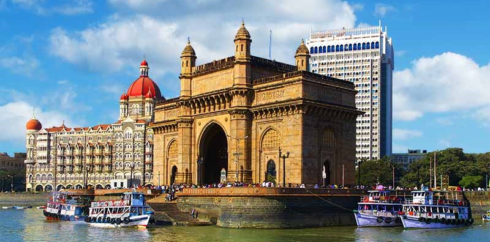
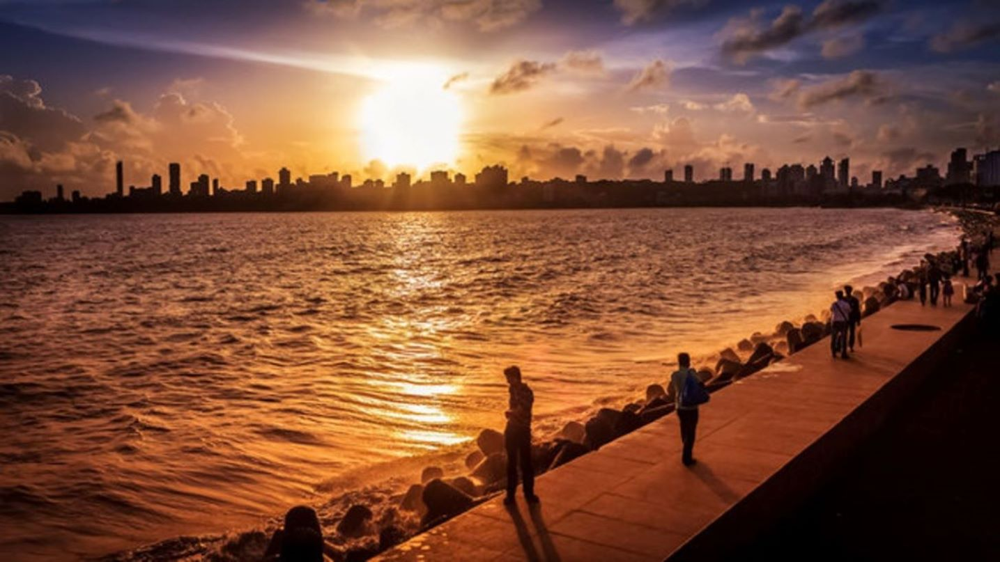
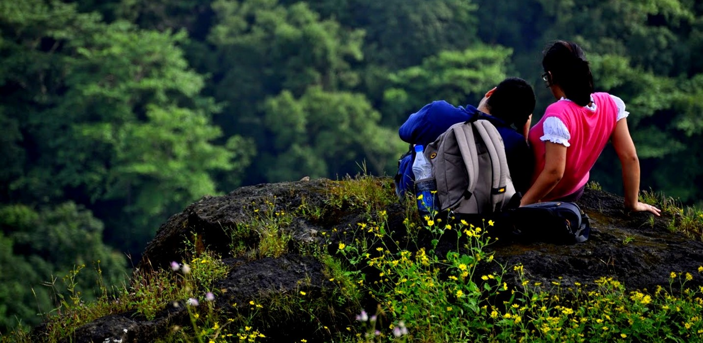
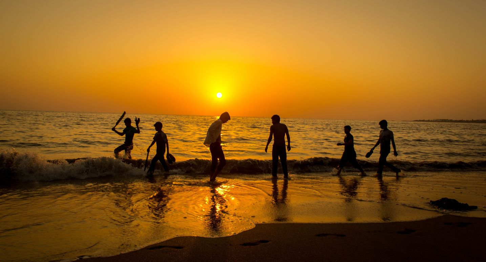
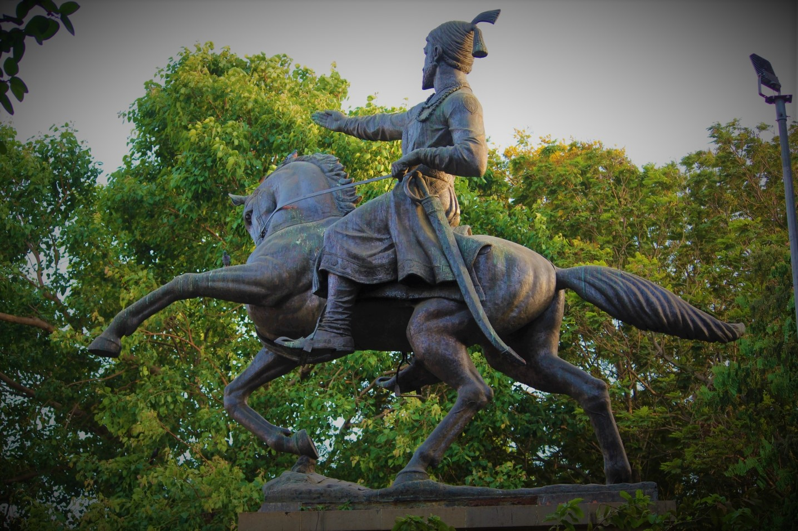

- 
The Gateway Of India
The Gateway of India is an arch monument built during the 20th century in Bombay, India. The monument was erected to commemorate the landing of King George V and Queen Mary at Apollo Bunder on their visit to India in 1911. Built in Indo-Saracenic style, the foundation stone for the Gateway of India was laid on 31 March 1911. The structure is an arch made of basalt, 26 metres (85 feet) high. The final design of George Wittet was sanctioned in 1914 and the construction of the monument was completed in 1924. The Gateway was later used as a symbolic ceremonial entrance to India for Viceroys and the new Governors of Bombay. It served to allow entry and access to India. The Gateway of India is located on the waterfront at Apollo Bunder area at the end of Chhatrapati Shivaji Marg in South Mumbai and overlooks the Arabian Sea. The monument has also been referred to as the Taj Mahal of Mumbai, and is the city’s top tourist attraction. - 
Marine Drive
The Marine drive officially known as Netaji Subhash Chandra Bose Road is a 3Km long, arc-shaped boulevard, located in Southern Mumbai, a landmark well-known for its glamour and glitter which it spreads in the city. It shawls the Arabian Sea and it’s the best place in Mumbai for seeing the sunset. Being shielded by palm trees all around and lights encasing the coast, craft the spectacular view in the night. Marine Drive was constructed during the second phase of the urban development of Bombay during the late 20th century. It was fabricated as a division of the Back Bay Reclamation Scheme of the British Government. A post lamp near Girgaum Chowpatty has an inscription on it which claims that the construction of Marine Drive began at the Kennedy Sea Face in 1915. It was named after an engineer Sir Michael Kavanagh Kennedy who was a General in the British Army and also a Secretary of Public Works Department Bombay. - 
Sanjay Gandhi National Park
With a long history since the 4th century BC, the Sanjay Gandhi National Park (SGNP) was established in 1996. Within the vicinity of Greece and Mesopotamia, the ancient civilization, two ports that are Sopoara and Kalyan was traded in ancient India. The 45 kilometers or 28 miles land route within these two ports went through the thick forest of SGNP. Then, later on, the Buddhists monks sculpted a cave out of massive basalt rock, named Kanheri Cave. Just before the independence, the park was named as “Krishnagiri National Park” but then, the area of the park was only 7.82 square miles and in 1976, they officially designated it as the “Borivali National Park”.Finally, in 1996, after Sanjay Gandhi, the son of the former Prime Minister of India, Indira Gandhi, the Borivali National Park was renamed to the Sanjay Gandhi National Park with a total area of 104 square kilometers. - 
Juhu Beach
The Juhu Beach in Mumbai is one of the most famous Indian beaches. This beach is known to be the one of the most-visited beaches of India and is situated in 'Ville Parle'. It is located approximately 18 km from the city center and is a desired location for most film shootings. Juhu Beach borders a posh locality where most celebrities stay and therefore, it is quite common to find famous celebrities jogging along the sands of this popular beach of Mumbai. Tourists visit this beach because of its peaceful atmosphere, Juhu Beach is also famous for its local delicacies and street food. The food stalls set up here offer excellent cuisines and snack items. People in Mumbai visit this beach to relax and enjoy after a long, tedious day. There are extravagant hotels and apartments located at the southern end of the beach. Watching the sunset in this wonderful place, guarded by the vast Arabian Sea, is a dream-like vision for anyone who visits the beach. - 
Shivaji Park
Shivaji Park, officially Chhatrapati Shivaji Maharaj Park, is a public park situated in Mahim, Mumbai. It is the largest park in the island city. Similar but bigger in size to Azad Maidan and August Kranti Maidan (formerly Gowalia Tank Grounds), it is of historical and cultural value because of the political and social gatherings it has witnessed, both in pre- and post-independence Mumbai. The 113,000 square metres (28 acres) of open space is renowned as having been a cradle of the game of cricket in India. The park has a variety of sports facilities including cricket nets, Tennis court, a Mallakhamba area and a football pitch amongst others.The statue of Shivaji, found on the western side of the park is one of the very few statues in which he is depicted without having drawn out his sword. Instead, Shivaji is shown simply leading the way with his arm outstretched. Sculpted in 1966 using donations from the local population.
Mumbai, the capital city of Maharashtra is called the “city of dreams” or “Mayanagri” as they call.
It has gained this epithet over the years not just because it offers limitless opportunities
for the Indian citizens across the states, but also for people across the borders.